multi-view + GAN / multi-view image generation
多视角与GAN相关的结合
multi-view image generation
- keywords
- GAN 3D scene multi view
- GAN multi view geometry
- multi view image generation from graph
- GRAF
- pi-GAN
"CR-GAN: Learning Complete Representations for Multi-view Generation"
[ IJCAI 2018 ] [paper] [ 
Rutgers University ]
[ Yu Tian, Dimitris N. Metaxas ]
[ complete representation, GAN, encoder-decoder ]
Click to expand
-
Motivation
- 第一个调查GAN模型的”complete representations”
- 用CR-GAN来学习完整的表达，使用一种两通路的模式(
reconstruction path+generation path) - CR-GAN可以利用
unlabeled data来self supervision，使得生成的质量更好 - 即使对于unseen的dataset，对于wild conditions，CR-GAN可以产生高质量的multi view图片
-
之前的GAN-based方法：encoder-decoder+discriminator
-
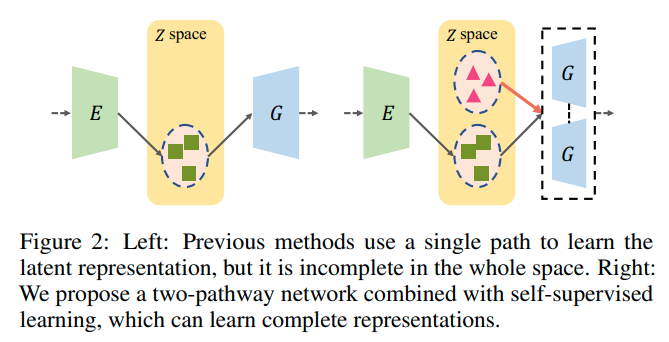 相比于之前的GAN-based方法，多了一条 generation path，试图补全z space - encoder把图片map到一个latent space，然后操作embedding，然后decoder生成新视角
- [CVPR 2017] [paper]
Disentangled Representation Learning GAN for Pose-Invariant Face Recognition - [2017] Multi-view image generation from a single-view.
-
之前的GAN-based方法的问题：
- 学到的都是“不完整”的表征，对于”unseen”data\无边界的data的泛化性很差
- ==思考==：encoder网络学到的大概率就是不完整的表征；这也是为什么用auto-decoder而不是encoder-decoder
-
-
proposal
- 除了
reconstruction path外，引入另一条generation path来 从随机采样的sample 创建view-specific images - 两条path 共享同样的G参数：在生成通路学到的G 会引导reconstruction path中的E和D的学习，反过来也是一样
- E is force to be G的逆向过程，使得学到的representation可以span the entire Z space
- 更重要的是，两通路的学习过程可以很容易地利用有label、无label的数据，对于自监督学习而言，从而大大丰富了Z space，对于自然的生成来说。
- 除了
-
discriminators

- ==问题== ：原来这些GAN-based方法中的discriminator都是干什么用的？单纯只是增加图像的细节程度？
- DR-GAN中：discriminator有两个任务：① id 分类。discriminator输出一个分类输出。② pose分类。分类器输出。
< multi-view BiGAN > "Multi-view Generative Adversarial Networks"
[ 2016 ] [paper] [ 
UPMC ]
[ Mickaël Chen, Ludovic Denoyer ]
[ BiGAN ]
Click to expand
too old
-
Motivation
-
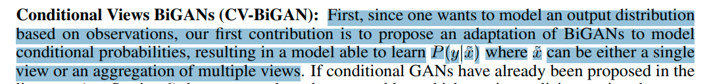
- 把BiGAN改造成适应conditional 概率；一个可以学到P(y|x)，x可以是单张图片或者是多张view的集合
-
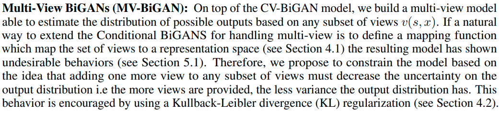
- 创造了一个multi-view model，给予任意一组subset of views，评估可能的输出的分布
- 如果说，一种自然的把BiGAN 延伸到适应multi view输入的方式 是 定义一个从a set of view到一个representation space的mapping function，那么，这种方法已经被证明会有不达到要求的表现
- 因此，我们提出了一种约束模型的方式：基于一个想法：对任意一组subset of views添加一个view都应该降低输出分布的不确定性。给的view越多，方差越小。用KL散度来正则化
-
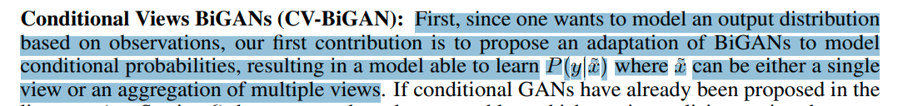
"Conditional Single-view Shape Generation for Multi-view Stereo Reconstruction"
[ 2019 ] [paper] [code] [ 
Tsinghua University ]
[ Yi Wei, Shaohui Liu, Jiwen Lu ]
[ multi view geometry constraint, image based shape generation ]
Click to expand
-
Motivation
- task: image based shape generation
- 把多张图片的重建问题 建模为 计算每个单张图片重建出的shape 空间的 交集
"Multi-view Relighting using a Geometry-Aware Network"
[ ACM T-Graphics 2019 ] [paper] [ 
Université Côte d'Azur and Inria, UCB ] [ 
Adobe ]
[ Julien Philip, MICHAËL GHARBI,TINGHUI ZHOU, ALEXEI A. EFROS, GEORGE DRETTAKIS ]
[ multi view video relighting ]
Click to expand
-
Motivation
- multi-view video relighting
- 首先从multi view的视频创建一个proxy geometry，然后考虑relighting
- 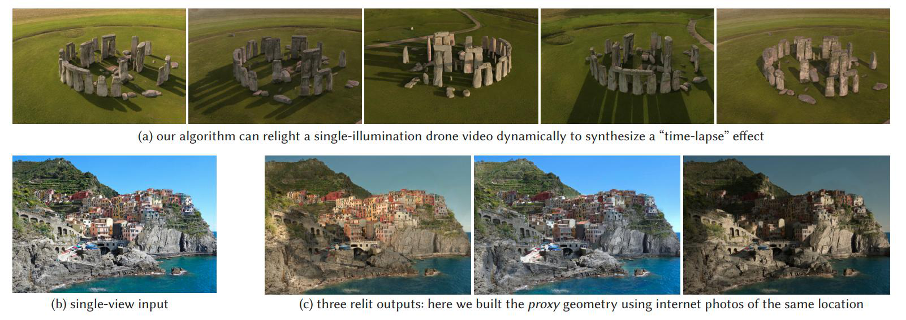
- 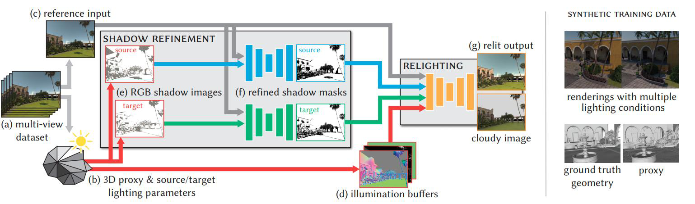
< GcGAN > "Geometry-Consistent Generative Adversarial Networks for One-Sided Unsupervised Domain Mapping"
[ CVPR2019 ] [paper] [code] [ 
University of Sydney, University of Pittsburgh, CMU,Universite Paris-Est ]
[ Huan Fu, Mingming Gong, Chaohui Wang, Kayhan Batmanghelich, Kun Zhang, Dacheng Tao ]
[ abcd ]
Click to expand
- Motivation
"RGBD-GAN: Unsupervised 3D Representation Learning From Natural Image Datasets via RGBD Image Synthesis"
[ ICLR2020 ] [paper] [ 
The University of Tokyo ] [ 
RIKEN ]
[ Atsuhiro Noguchi, Tatsuya Harada ]
[ multi view geometry constraint, natural dataset, 3D representation ]
Click to expand
-
Motivation
- natural datasets下，通过RGBD图像生成，进行无监督的3D表征学习
-
3.2.2 SELF-SUPERVISED RGBD CONSISTENCY LOSS
- 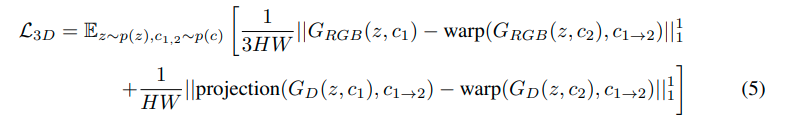
"Towards Unsupervised Learning of Generative Models for 3D Controllable Image Synthesis"
[ CVPR2020 ] [paper] [code] [ 
University of Tubingen, MPI-IS ] [ 
Amazon ]
[ Yiyi Liao,Katja Schwarz,Lars Mescheder, Andreas Geiger ]
[ autonomous_vision lab ]
[ HoloGAN->baseline,RGBD-GAN based, multi object multi view, Controllable Image Synthesis ]
Click to expand
-
Motivation
- 首先 从一个高斯采样的latent code 映射到一系列3D primitives（一些原初3D物体表征）
再渲染物体 再渲染背景
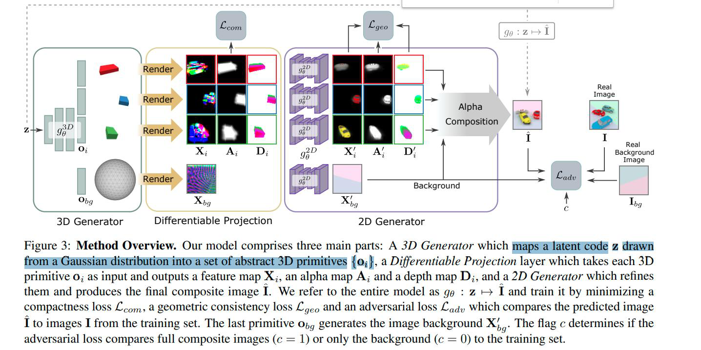
- 首先 从一个高斯采样的latent code 映射到一系列3D primitives（一些原初3D物体表征）
| Input | unlabeled image |
|---|---|
| output | multi view images |
| dataset |
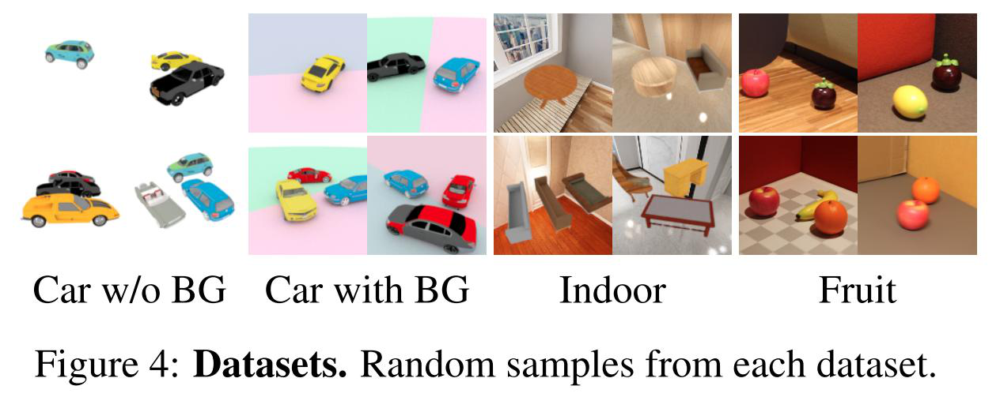 随机背景、随机物体、随机view point 3D primitives: no label instance segmentation: no label pose annotations: no label |
- 训练这样的模型是有挑战的：
- 比如有可能把2个物体理解为同一个primitive，甚至…；
- 因此，使用多个loss来鼓励一个解耦、可解释的3D表征；同时从训练集分布中生成图片。
-
loss
-
adversarial loss：标准的real/fake loss + condition
-
condition on: 是完全的composite image还是background image
实验证明，这个condition有助于从背景中解耦物体
- 因此在训练时，收集两组数据集：带有物体的和没有物体的
-
-
compactness loss ：紧凑性loss
-
To bias solutions towards compact representations and to encourage the 3D primitives to tightly encase the objects, we minimize the projected shape of each object.
为了让solutions 倾向于完整的表征，鼓励3D primitives能够紧贴合物体，我们最小化每个物体的投影shape
- 惩罚每个物体
alpha map的L1-范数 -
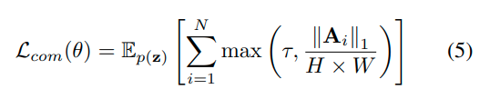
\(\tau=0.1\) 是一个防止收缩到一个固定最小值以下的截短阈值， \(A_i\) 依赖于模型参数和 latent code z（so 这个loss可以对模型参数有作用）
-
-
(==self supervised==) geometry consistency loss
-
为了得到在不同的
camera viewpoints和3D物体pose中都consistent的solutions，遵循 [33]RGBD-GAN 来鼓励生成模型来遵守多视几何约束。 -
比如，对于pose(外参)的改变应该改变物体的pose但是不应该alter它的颜色或者identity.
-
这样formulate这个约束：
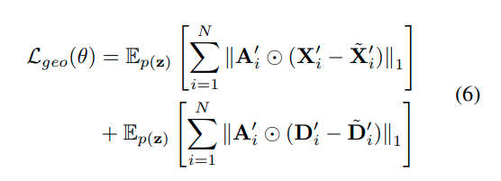
\(X_i'\) \(D_i'\) 是 latent code z的2D generator 输出
\(\tilde{X}_i'\) \(\tilde{D}_i'\) 是 同一个latent code对每个primitive的pose加入随机噪声 并且 [Warping the result back to the original viewpoint] (即重投影回加噪声之前的viewpoint) 后的2D generator输出
- 相当于是一个自监督的重投影误差loss
-
-
adversarial loss：标准的real/fake loss + condition
"Inverse Graphics GAN: Learning to Generate 3D Shapes from Unstructured 2D Data"
[ 2020 ] [paper, supp] [ 
University of Cambridge ]
[ Sebastian Lunz, Yingzhen Li, Andrew Fitzgibbon, Nate Kushman ]
[ Inverse Graphics, GAN, 3D shape generation ]
Click to expand
-
Motivation
- 从非结构化的2D数据生成voxels类3D shape
- 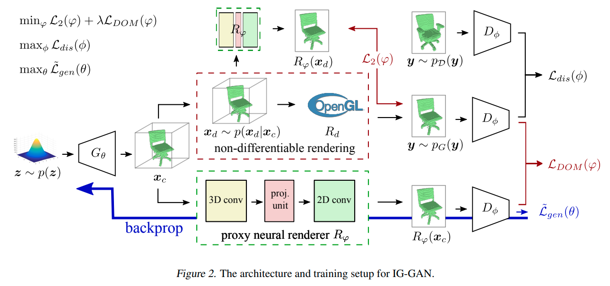
- results：
- 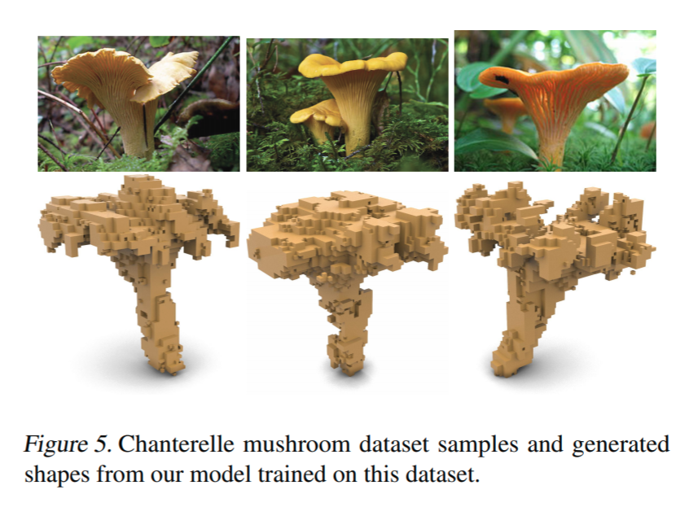
< 3D multi object GAN >"Fully Convolutional Refined Auto-Encoding Generative Adversarial Networks for 3D Multi Object Scenes"
[ blog 2018 ] [code] [blog] [ 
Stanford AI Lab ]
[ Yu Nishimura ]
[ 3DGAN, 3D shape generation ]
Click to expand
- Motivation
-
dataset
- ground truth voxel data of SUNCG dataset.
-
results
- 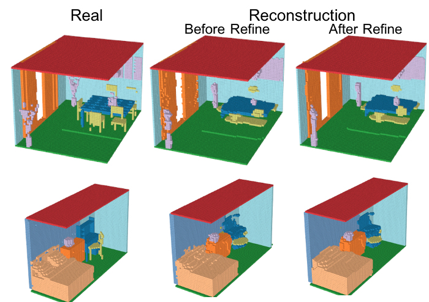
video-GAN / video generation
- 用的discriminator一般都是时空卷积；主要考虑的是时间域的分布，没有管multi view